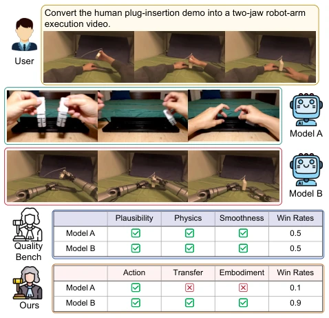
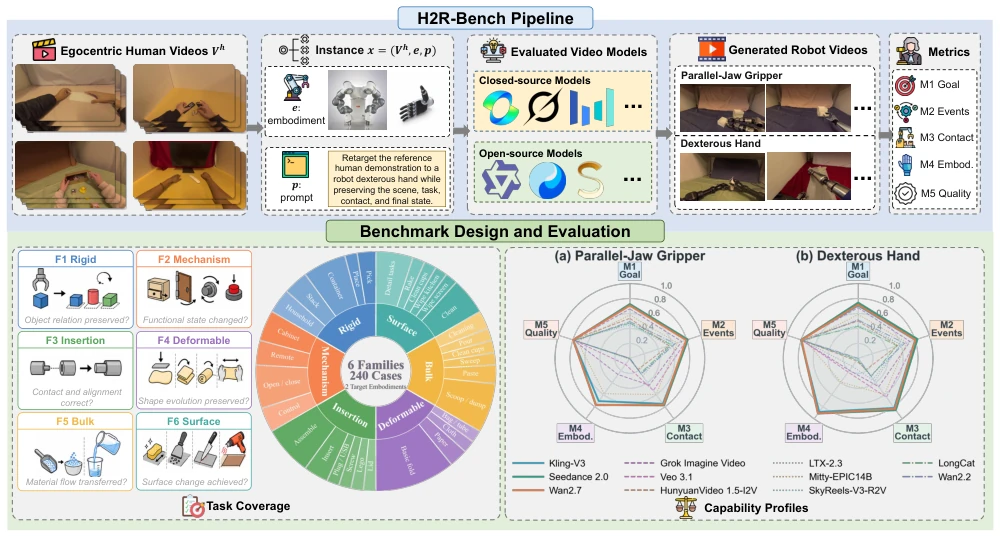
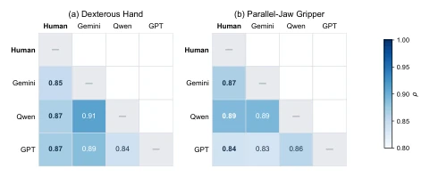
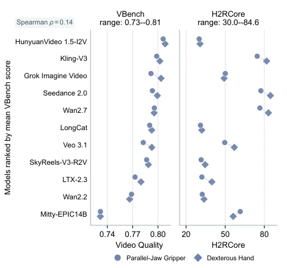
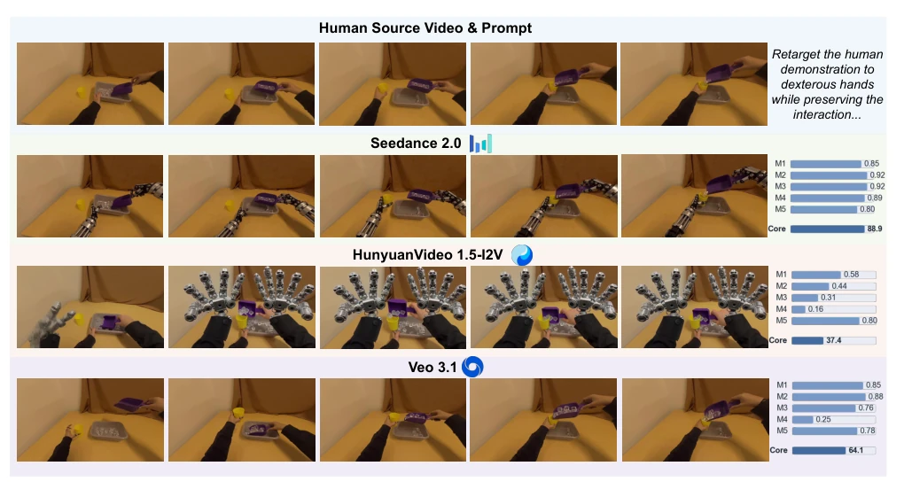

This paper pours cold water on the video generation field. Although the industry competes on video quality (VBench), H2R-Bench points out: whether the video looks like a robot is not important; what matters is whether the robot can accomplish the task. Existing models often "fail to paint a tiger and end up resembling a dog", actions look smooth, but hand shapes are wrong or contact logic collapses. The highlight lies in introducing a "cross-embodiment" perspective, forcing models to retain task intent and interaction evidence from human demonstrations, rather than simple style transfer. The drawback is that current evaluation relies on MLLM scoring, which may still carry hallucination risks, and it only covers 6 types of tasks, raising doubts about generalizability. It reveals the huge gap between visual fidelity and functional fidelity in current world models, reminding researchers not to focus solely on competing on image quality.
研究动机Motivation
机器人学习缺数据，人类视频多，但直接迁移难。现有基准如 WorldModelBench (Li et al. 2026a) 或 RoboTrustBench (Li et al. 2026c) 多关注文本生成或机器人自洽性，忽略了“人类示范到机器人执行”的跨具身保真度。它们无法诊断具身一致性丢失或功能交互错误，导致模型在视觉上高分却在任务执行上失效。例如，模型可能生成正确的最终状态，但由人类手完成，而非机器人。H2R-Bench 填补了这一评估空白，强调源视频作为“证据”而非风格参考，确保任务意图、动作事件及功能接触被正确转移，而非仅生成 plausible 的视频。
Robot learning lacks data; human videos are abundant, but direct transfer is difficult. Existing benchmarks such as WorldModelBench (Li et al. 2026a) or RoboTrustBench (Li et al. 2026c) mostly focus on text generation or robot self-consistency, ignoring the cross-embodiment fidelity from "human demonstration to robot execution". They cannot diagnose embodiment consistency loss or functional interaction errors, leading to models scoring high visually but failing in task execution. For example, the model may generate the correct final state, but it is completed by a human hand, not a robot. H2R-Bench fills this evaluation gap, emphasizing the source video as "evidence" rather than a style reference, ensuring task intent, action events, and functional contact are correctly transferred, rather than merely generating plausible videos.

Figure 1: Comparison between existing evaluation and H2R- Bench. Given a human demonstration and a target embodi- ment instruction, video world models generate robot manipu- lation videos. Existing video benchmarks such as WorldMod- elBench (Li et al. 2026a) assess overall video plausibility, rates both videos highly, whereas our H2R-Bench diagnoses transfer through goal, action, contact, and embodiment.
Construct H2R-Bench, based on 120 videos from EgoDex, paired with two types of manipulators (parallel gripper/dexterous hand), totaling 240 cases. Input: human video + prompt; Output: robot video. Evaluation is divided into five dimensions: M1 Goal Completion, M2 Action Events, M3 Functional Contact, M4 Embodiment Correctness, M5 Video Quality. The core score H2RCore weights contact and embodiment (30% each), emphasizing functional interaction and morphological consistency. 11 SOTA models (Seedance, Wan, etc.) tested via native interface, without robot reference images. Prompts only specify task goals and embodiment types, do not preset trajectories, allowing different strategies. Evaluation is conducted by MLLM scoring sampled frames to ensure objectivity and reproducibility, while retaining a human verification step.

Figure 2: Overview of H2R-Bench. The benchmark curates egocentric human manipulation demonstrations, conditions video generators on each model’s supported source interface and target embodiment, and evaluates the resulting robot videos with transfer-aware metrics. The lower panels summarize task coverage and model capability profiles across both target embodiments.
Tested 11 models, found weak correlation between video quality (VBench) and transfer ability (H2RCore) (ρ=0.14). Dexterous hand performance outperforms gripper, as morphology is closer to humans. Veo 3.1 has extremely low embodiment score, Hunyuan has high quality but low contact score. Ablation shows reference image effects vary; Wan2.7 benefited while Kling was harmed. MLLM evaluation and human correlation is high (ρ=0.883). Proves current world models struggle to bridge the human-robot embodiment gap; visual quality cannot replace functional verification. Seedance 2.0 has the best overall performance, but there is still room for improvement.

Figure 3: Agreement between human and MLLM evaluators. Human raters and MLLM judges rank generated videos based on the transfer score aggregated from M1–M4. MLLM-based evaluation closely aligns with human judgments, with Spear- man correlations above 0.8 across evaluators.

Figure 4: VBench Video Quality versus H2RCore. Unlike VBench, H2RCore better differentiates the models.

Figure 5: Qualitative H2R transfer results with the shared source video and prompt. The unscored top row is the human source; the generated rows show representative stages of each output. Metric strips report per-video M1–M5 and H2RCore.